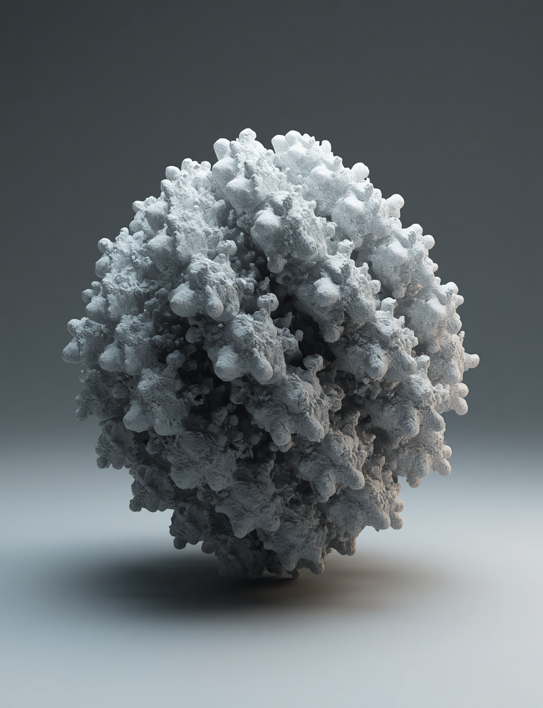
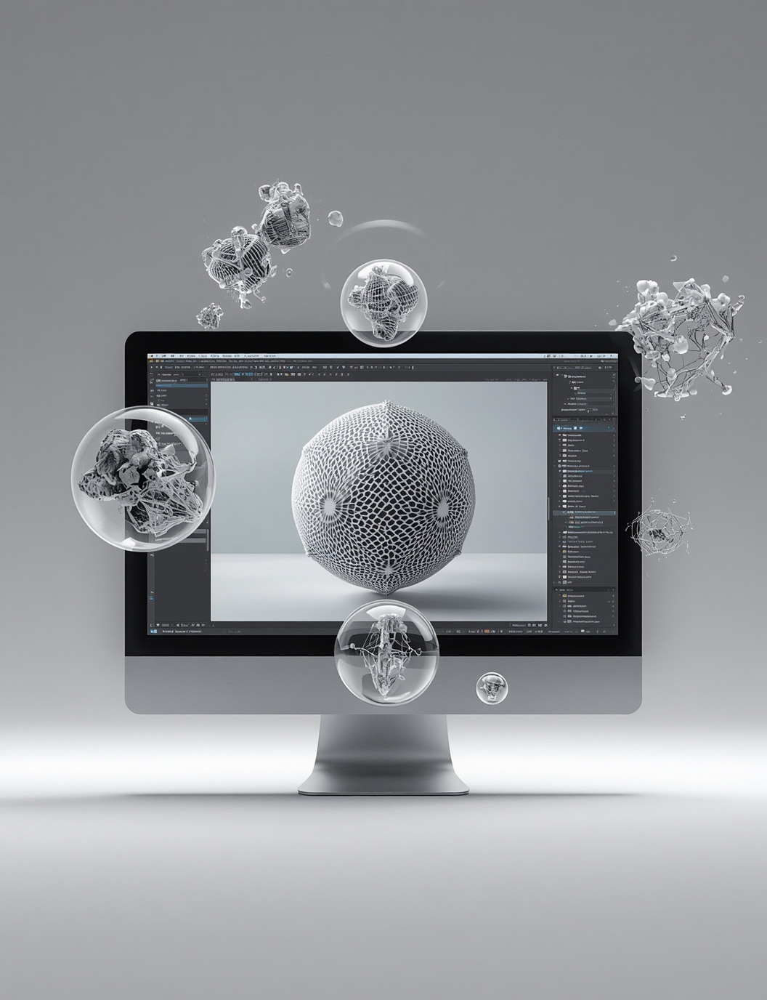
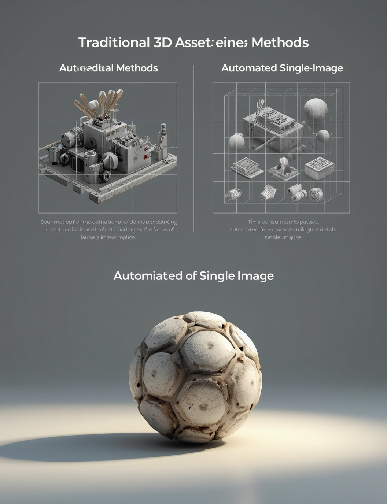
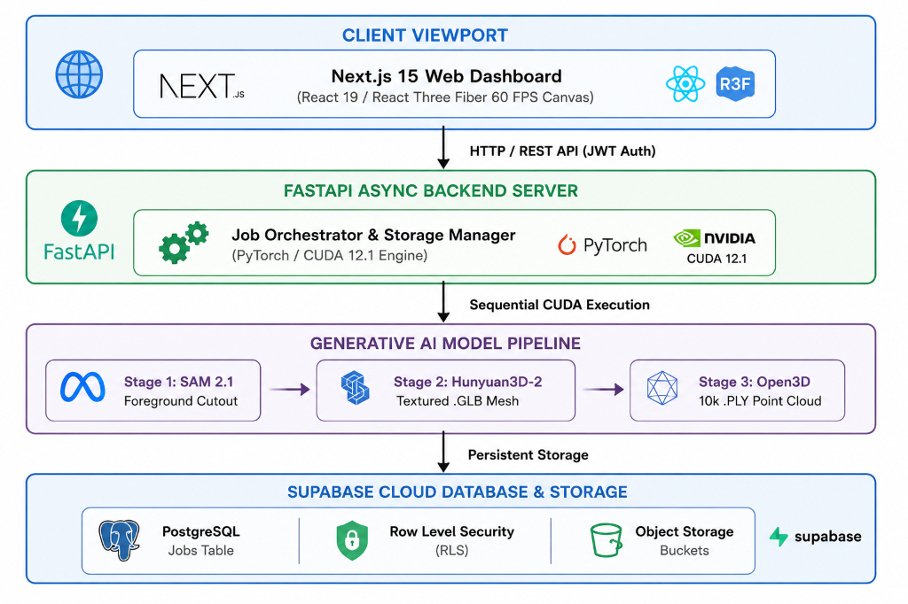
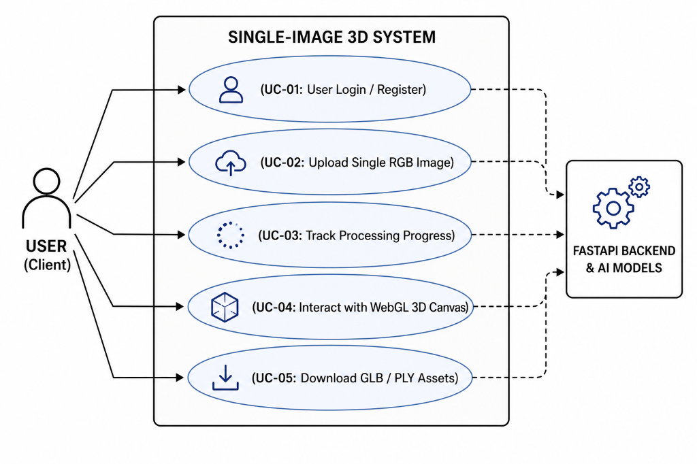

Automated Single-Image to 3D Asset & Point Cloud Generation System
An end-to-end web system converting single 2D RGB photographs into textured 3D polygon meshes (.GLB) and surface point clouds (.PLY) in ~19.6 seconds.

Submitted By
Rajashekhar B Durgad
USN: 01FE24MCA027
Under the Guidance of
Prof. Akash Hulkund
Department of MCA, KLE Tech
1 Introduction
Overview & ArchitectureAutomated 2D to 3D Pipeline
Transforms raw 2D photographs into textured 3D polygon meshes (.GLB) and surface point clouds (.PLY) without multi-view setups or manual modeling.
Multi-Stage AI Engine
Integrates Meta SAM 2.1 (foreground isolation), Tencent Hunyuan3D-2 (triplane synthesis), and Open3D (Poisson disk surface point sampling).

2 Problem Statement
Challenges & BottlenecksHigh Manual Overhead in Traditional 3D Modeling
Manual CAD software (Blender, Maya) requires specialized artistic skills and hours to days of labor per single 3D asset.
Photogrammetry & Text-to-3D Limitations
Photogrammetry requires 50+ calibrated camera shots and studio lighting. Text-to-3D generative models lack spatial precision for exact physical objects.

3 Objectives
System Goals4 Scope & Constraints
BoundariesSystem Scope
- Supports JPG, PNG, WEBP, BMP image formats up to 25 MB.
- Generates downloadable textured .GLB mesh and .PLY point cloud.
- Targeted at e-commerce 3D catalogs, AR/VR spatial apps, and game development.
Operational Constraints
- Optimized for single prominent foreground objects.
- Executes within a 16 GB VRAM GPU ceiling (NVIDIA T4 workstation).
- Synthesizes occluded rear textures via triplane diffusion interpolation.
5 Block Diagram
System Architecture
Sequential CUDA execution and explicit GPU cache flushing (torch.cuda.empty_cache()) prevent VRAM OOM crashes.
6 Requirements
Functional & Non-Functional6.1 Functional Requirements
- FR-01: Supabase JWT user authentication & session control.
- FR-02: Drag-and-drop upload with format check & 25 MB cap.
- FR-03: Automated SAM 2.1 background removal & alpha matting.
- FR-04: Rapid textured 3D mesh synthesis (.GLB format).
- FR-05: Poisson disk point cloud sampling with normals (.PLY).
- FR-06: Interactive 60 FPS WebGL canvas with orbit controls.
6.2 Non-Functional Requirements
- Performance: Total pipeline latency completed in ~19.6s.
- Memory Ceiling: Peak memory strictly capped at 11.4 GB VRAM.
- Usability: Modern glassmorphism UI with Light/Dark mode.
- Reliability: 100% test pass rate across all 8 Master Acceptance tests.
7 Use-Case Diagram
User & System Interaction
8 Conclusion & Future Scope
Summary & RoadmapProject Conclusion
Successfully engineered an automated single-image 3D reconstruction system delivering textured .GLB meshes and .PLY point clouds in ~19.6s with a peak GPU footprint of 11.4 GB VRAM.
Future Scope & Enhancements
- • PBR Textures: Metallic, roughness & normal maps.
- • WebGPU Splatting: 3D Gaussian Splatting rendering.
- • 3D Printing: Quad-remashing for watertight .STL files.
- • WebXR AR/VR: Mobile AR & Apple Vision Pro passthrough.
9 References
Academic Citations1. Tencent Hunyuan3D-2 Team. (2025). Hunyuan3D 2.0: Scaling Diffusion Models for High-Fidelity 3D Asset Generation. arXiv:2501.12211.
2. Kirillov, A., et al. (2023). “Segment Anything.” IEEE/CVF ICCV, pp. 4015–4026.
3. Ravi, N., et al. (2024). SAM 2: Segment Anything in Images and Videos. arXiv:2408.00714.
4. Li, J., et al. (2022). “BLIP: Bootstrapping Language-Image Pre-training.” ICML, 12888–12900.
5. Zhou, Q., et al. (2018). Open3D: A Modern Library for 3D Data Processing. arXiv:1801.09847.
6. Lorensen, W. E., & Cline, H. E. (1987). “Marching Cubes: A 3D Surface Construction Algorithm.” ACM SIGGRAPH, 21(4), 163–169.
7. Next.js & React Three Fiber Documentation. (2025). Vercel & Poimandres.